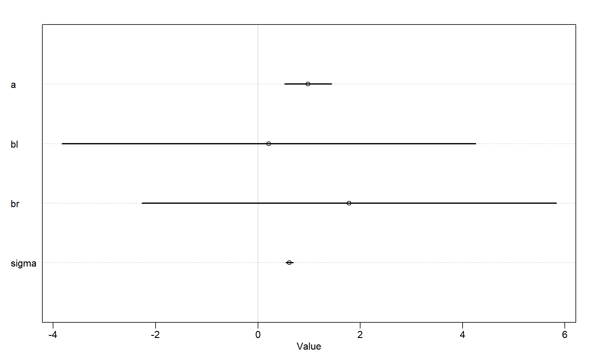
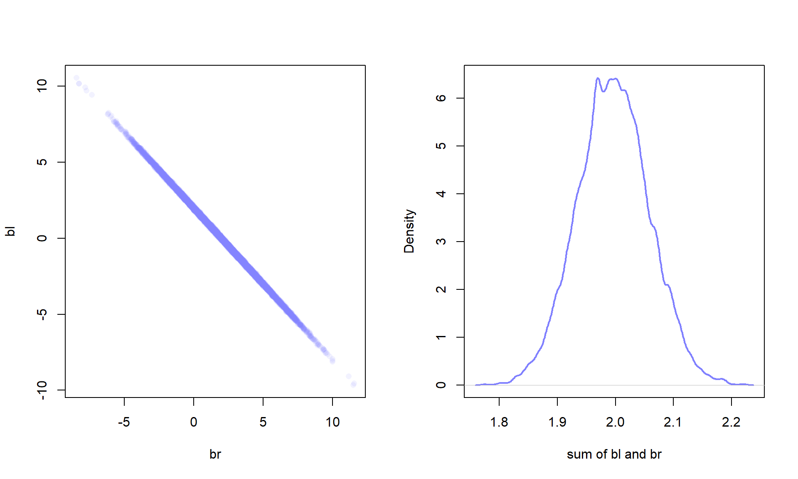
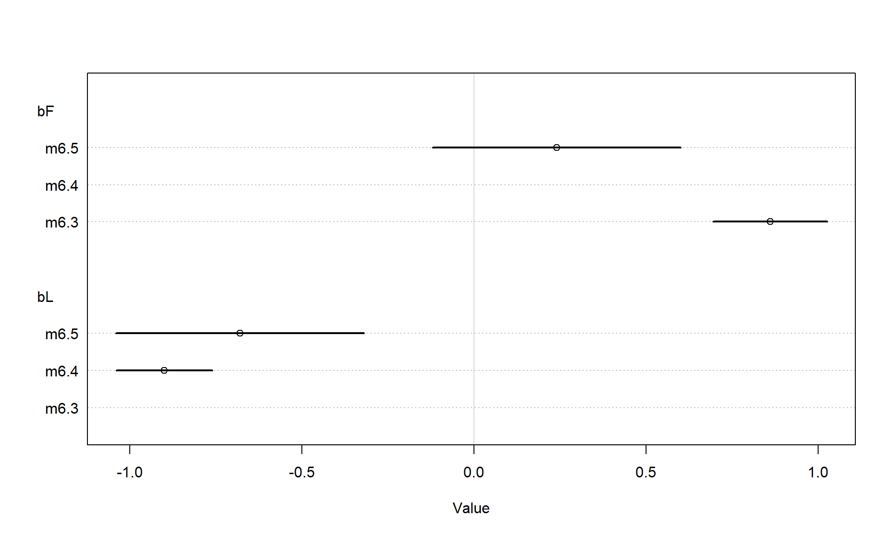
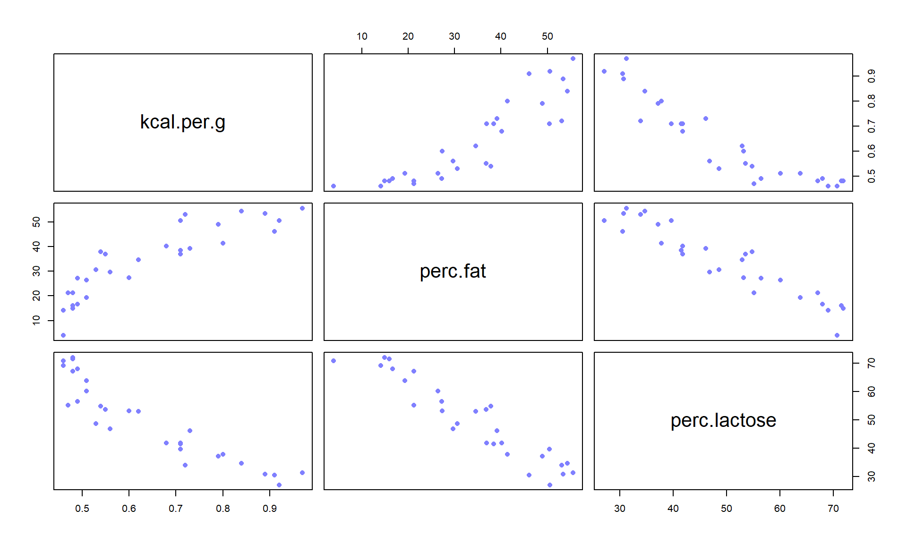
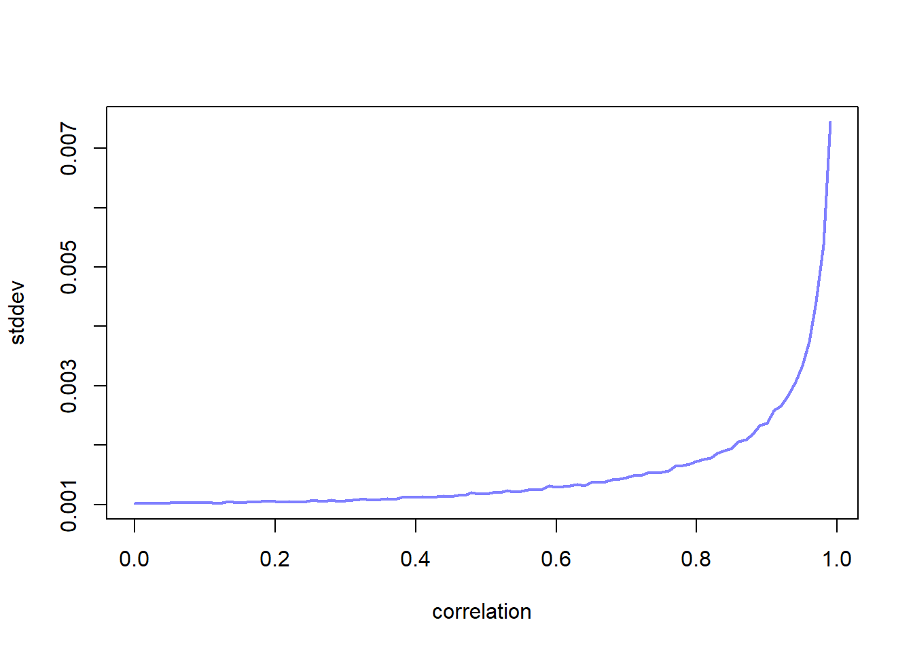
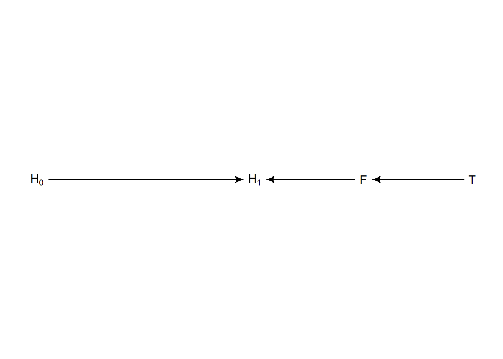

Code
library(rethinking)
library(dagitty)library(rethinking)
library(dagitty)Generate an example of collider bias. Here we use the newsworthiness and trustworthiness example:
N <- 200
p <- 0.1
nw <- rnorm(N); tw <- rnorm(N)
# select the top ten 10%
s <- nw + tw
q <- quantile(s, 1-p)
selected <- s >= q
cor(tw[selected], nw[selected])[1] -0.620149Let’s simulate a height dataset, we will then simulate leg length for the right and left leg.
set.seed(909)
N <- 100
height <- rnorm(N, 10,2)
leg_prop <- runif(N,0.4,0.5)
leg_left <- leg_prop*height + rnorm(N,0,0.02)
leg_right <- leg_prop*height + rnorm(N,0,0.02)
d <- data.frame(height, leg_left, leg_right)If we regress leg height onto height. We expect the coefficient for leg height to be around 2.2, since the average leg height is 4.5 at the avearge height of 10 (10/4.5).
m6.1 <- quap(alist(
height ~ dnorm(mu, sigma),
mu <- a + bl*leg_left + br*leg_right,
a ~ dnorm(10,100),
bl ~ dnorm(2,10),
br ~ dnorm(2,10),
sigma ~ dexp(1)
), data=d)
precis(m6.1) mean sd 5.5% 94.5%
a 0.9812791 0.28395540 0.5274635 1.4350947
bl 0.2118585 2.52703706 -3.8268348 4.2505518
br 1.7836774 2.53125061 -2.2617500 5.8291047
sigma 0.6171026 0.04343427 0.5476862 0.6865189vcov(m6.1) |> cov2cor() a bl br sigma
a 1.0000000000 0.060242427 -0.083745291 0.0003969113
bl 0.0602424274 1.000000000 -0.999708531 0.0054813380
br -0.0837452911 -0.999708531 1.000000000 -0.0054811932
sigma 0.0003969113 0.005481338 -0.005481193 1.0000000000plot(precis(m6.1))
The question we are asking of the model is: “What is the value of knowing each leg’s length, after already knowing the other leg’s length”.
par(mfrow=c(1,2))
post <- extract.samples(m6.1)
plot(bl ~ br, post, col=col.alpha(rangi2, 0.1), pch=16)
sum_blr <- post$bl + post$br
dens(sum_blr, col=rangi2, lwd=2, xlab='sum of bl and br')
A model with only one of the predictors will produce a coefficient that is inline with the sum of the \(\beta_l\) and \(\beta_r\)
m6.2 <- quap(alist(
height ~ dnorm(mu, sigma),
mu <- a + bl*leg_left,
a ~ dnorm(10,100),
bl ~ dnorm(2,10),
sigma ~ dexp(1)
), data=d)
precis(m6.2) mean sd 5.5% 94.5%
a 0.9979326 0.28364620 0.5446112 1.451254
bl 1.9920676 0.06115704 1.8943269 2.089808
sigma 0.6186038 0.04353998 0.5490185 0.688189Take home message: When two predictor variables are very strongly correlated (conditional on other variables in the model), including both in a model may lead to confusion.
Let’s return to the primate milk example:
data(milk)
d <- milk
d$K <- standardize(d$kcal.per.g)
d$fat <- standardize(d$perc.fat)
d$L <- standardize(d$perc.lactose)Let’s start with two bivariate regressions
m6.3 <- quap(alist(
K ~ dnorm(mu, sigma),
mu <- a + bF*fat,
a ~ dnorm(0,0.2),
bF ~ dnorm(0,0.5),
sigma ~ dexp(1)
), data=d)
m6.4 <- quap(alist(
K ~ dnorm(mu, sigma),
mu <- a + bL*L,
a ~ dnorm(0,0.2),
bL ~ dnorm(0,0.5),
sigma ~ dexp(1)
), data=d)
precis(m6.3); precis(m6.4) mean sd 5.5% 94.5%
a 1.535526e-07 0.07725195 -0.1234634 0.1234637
bF 8.618970e-01 0.08426088 0.7272318 0.9965621
sigma 4.510179e-01 0.05870756 0.3571919 0.5448440 mean sd 5.5% 94.5%
a 7.438895e-07 0.06661633 -0.1064650 0.1064665
bL -9.024550e-01 0.07132848 -1.0164517 -0.7884583
sigma 3.804653e-01 0.04958259 0.3012227 0.4597078We might think that both are good predictors, but watch what happens when we put both variables into the model:
m6.5 <- quap(alist(
K ~ dnorm(mu, sigma),
mu <- a + bL*L + bF*fat,
a ~ dnorm(0,0.2),
bL ~ dnorm(0,0.5),
bF ~ dnorm(0,0.5),
sigma ~ dexp(1)
), data=d)
precis(m6.5) mean sd 5.5% 94.5%
a -4.429949e-07 0.06603529 -0.10553759 0.1055367
bL -6.780787e-01 0.18377563 -0.97178761 -0.3843697
bF 2.435019e-01 0.18357757 -0.04989054 0.5368943
sigma 3.767387e-01 0.04918293 0.29813489 0.4553426plot(coeftab(m6.3, m6.4, m6.5), pars=c('bF', 'bL'))
It is the same problem as the previous leg length example: the two variables form essential a single axis of variation.
pairs(~ kcal.per.g + perc.fat + perc.lactose, data=d,col=rangi2,pch=16)
Both variables are good predictors on their own, but neither are good predictors if you already know the other. Richie argues that this is because there is a latent variable \(D\) that influences both lactose and fat. We are no working with a class of fitting problems known as non-identifiability.
Let’s simulate some multicollinearity. We are going to create a new column \(x\) that is created from \(F\) with a correlation parameter.
sim.coll <- function(r=0.9){
d$x <- rnorm(nrow(d), mean=r*d$perc.fat, sd=sqrt((1-r^2)*var(d$perc.fat)))
m <- lm(kcal.per.g ~ perc.fat + x, data=d)
sqrt(diag(vcov(m)))[2] #std dev of x
}
rep.sim.coll <- function(r=0.9, n=100){
stddev <- replicate(n, sim.coll(r))
mean(stddev)
}
r.seq <- seq(0,0.99,0.01)
stddev <- vapply(r.seq, rep.sim.coll, n=100, numeric(1))
plot(r.seq, stddev, type='l', col=rangi2, lwd=2, xlab='correlation')
Let’s say that we have two soils that we are testing. The goal is for one soil to reduce the growth of fungus (which inhibits plant growth). There are four data points collected: pre plant height, post plant height, treated, and fungus growth. If we were to include fungus growth into the model it would ruin the experiment. Here is a simulation:
set.seed(71)
N <- 100
h0 <- rnorm(N,10,2)
treatment <- rep(0:1, each=N/2)
fungus <- rbinom(N, size=1, prob=0.5 - treatment*0.4)
h1 <- h0 + rnorm(N, 5 - 3*fungus)
d <- data.frame(h0,h1,treatment, fungus)
precis(d) mean sd 5.5% 94.5% histogram
h0 9.95978 2.1011623 6.570328 13.07874 ▁▂▂▂▇▃▂▃▁▁▁▁
h1 14.39920 2.6880870 10.618002 17.93369 ▁▁▃▇▇▇▁▁
treatment 0.50000 0.5025189 0.000000 1.00000 ▇▁▁▁▁▁▁▁▁▇
fungus 0.23000 0.4229526 0.000000 1.00000 ▇▁▁▁▁▁▁▁▁▂Let’s define \(p=h_{1,i}/h_{0,i}\), the height at time \(t=1\) over the height at time \(t=0\). We do this since we expect the plant to be taller, but we will let \(p\) be less than one just in case things to horribly wrong. We’ll use the log-normal to enforce this.
m6.6 <- quap(alist(
h1 ~ dnorm(mu, sigma),
mu <- h0*p,
p ~ dlnorm(0,0.25),
sigma ~ dexp(1)
), data=d)
precis(m6.6) mean sd 5.5% 94.5%
p 1.426628 0.01759834 1.398503 1.454754
sigma 1.792106 0.12496794 1.592383 1.991829An average about a 40% growth rate. Now, let’s include both fungus and treatment into the model:
m6.7 <- quap(alist(
h1 ~ dnorm(mu, sigma),
mu <- h0*p,
p <- a + bt*treatment + bf*fungus,
a ~ dlnorm(0,0.2),
bt ~ dnorm(0,0.5),
bf ~ dnorm(0,0.5),
sigma ~ dexp(1)
), data=d)
precis(m6.7) mean sd 5.5% 94.5%
a 1.48139094 0.02451068 1.44221815 1.52056373
bt 0.00241255 0.02986963 -0.04532488 0.05014998
bf -0.26671805 0.03654770 -0.32512833 -0.20830777
sigma 1.40879638 0.09862052 1.25118174 1.56641102The heck? Treatment is zero? Yes, because we are effectively asking the question: “once we already know whether or not a plant developed fungus, does soil treatment matter?”. The answer of course is no.
Let’s build it again, but without fungus:
m6.8 <- quap(alist(
h1 ~ dnorm(mu, sigma),
mu <- h0*p,
p <- a + bt*treatment,
a ~ dlnorm(0,0.2),
bt ~ dnorm(0,0.5),
sigma ~ dexp(1)
), data=d)
precis(m6.8) mean sd 5.5% 94.5%
a 1.38035157 0.02517700 1.34011386 1.4205893
bt 0.08499494 0.03429912 0.03017831 0.1398116
sigma 1.74641704 0.12193300 1.55154456 1.9412895Model m6.7 is still important though. It tells us that including fungus in the model effectively zeros out the treatment, suggesting that the treatment worked for the anticipated reasons. Let’s look at the DAG:
plant_dag <- dagitty('dag{H_0 -> H_1; F -> H_1; T -> F}')
coordinates(plant_dag) <- list(x=c(H_0 = 0, T=2, F=1.5, H_1=1),
y=c(H_0=0, T=0, F=0, H_1=0))
drawdag(plant_dag)
The correct way of phrasing what happened is: “conditioning on F induces D-Separation”. Let’s look at all the conditional independences:
impliedConditionalIndependencies(plant_dag)F _||_ H_0
H_0 _||_ T
H_1 _||_ T | FNotice that the first two don’t have any conditions because they are independent without any conditionals (colliders).
Let’s try a different experiment, where instead of fungus influencing plant growth, it is actually an unobserved variable \(M\) moisture. The treatment is also independent of \(H_1\). \(M\) influences both \(F\) and \(H_1\). Notice, if we condition on fungus we open up the path and \(T\) can now influence \(H_1\), even though \(T\) is indep. of \(H_1\) without any conditionals.
N <- 100
h0 <- rnorm(N,10,2)
treatment <- rep(0:1,each=N/2)
M <- rbern(N)
fungus <- rbinom(N, size=1, prob=0.5 - treatment*0.4 + 0.4*M)
h1 <- h0 + rnorm(N, 5 + 3*M)
d2 <- data.frame(h0, h1, treatment, fungus)
m6.7.1 <- quap(alist(
h1 ~ dnorm(mu, sigma),
mu <- h0*p,
p <- a + bt*treatment + bf*fungus,
a ~ dlnorm(0,0.2),
bt ~ dnorm(0,0.5),
bf ~ dnorm(0,0.5),
sigma ~ dexp(1)
), data=d2)
precis(m6.7.1) mean sd 5.5% 94.5%
a 1.50672922 0.04069269 1.44169444 1.57176400
bt 0.02008198 0.04363655 -0.04965765 0.08982162
bf 0.18732017 0.04363413 0.11758441 0.25705593
sigma 2.15435876 0.15004698 1.91455470 2.39416282m6.8.1 <- quap(alist(
h1 ~ dnorm(mu, sigma),
mu <- h0*p,
p <- a + bt*treatment,
a ~ dlnorm(0,0.2),
bt ~ dnorm(0,0.5),
sigma ~ dexp(1)
), data=d2)
precis(m6.8.1) mean sd 5.5% 94.5%
a 1.62227861 0.03263743 1.5701177 1.67443952
bt -0.02998446 0.04523376 -0.1022767 0.04230782
sigma 2.32259770 0.16155566 2.0644005 2.58079484